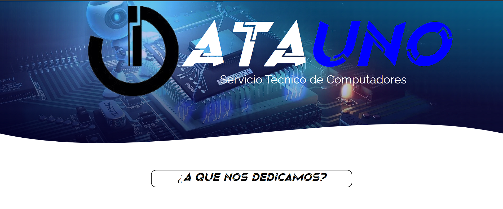
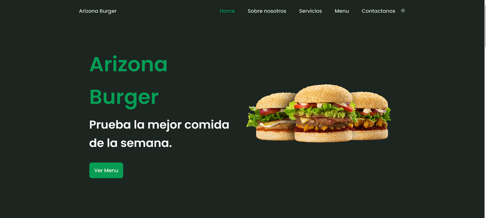
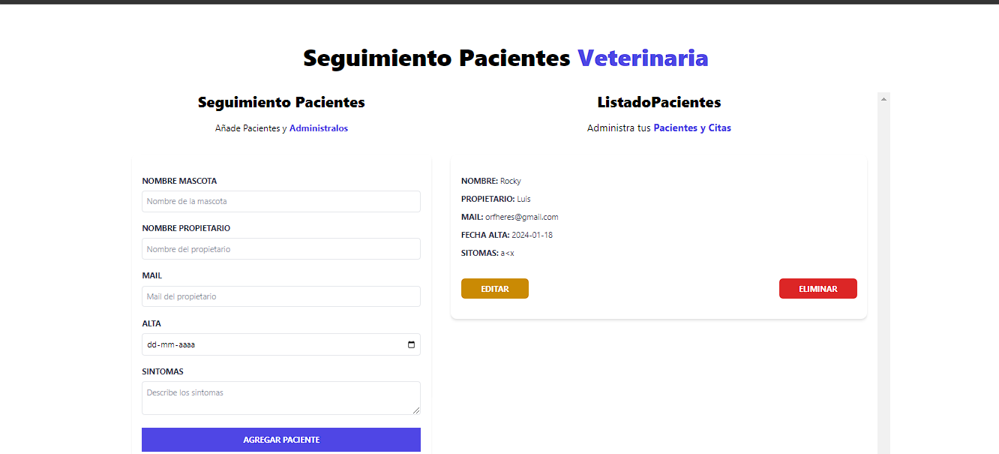
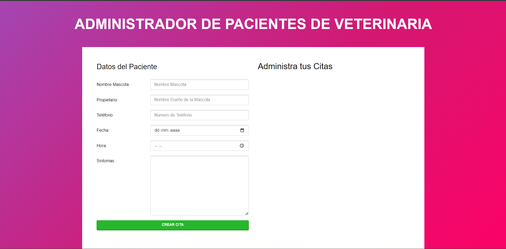
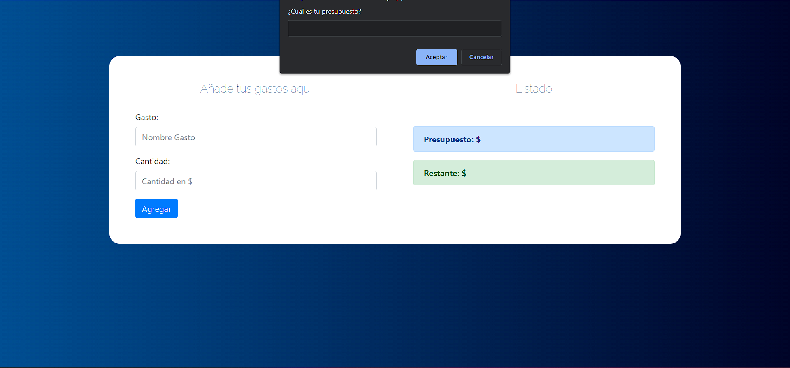

Desarrollo web · datos · automatización
Hola, soy Alfonso Contreras.
Construyo soluciones reales con JavaScript, backend, bases de datos y criterio de negocio.
Desarrollador Full Stack en formación continua, con experiencia creando sistemas, catálogos, paneles administrativos, automatizaciones y proyectos que nacen de problemas reales.
Sobre mí
Desarrollador con mentalidad de producto, datos y mejora continua.
Soy Alfonso Contreras, Ingeniero en Informática y desarrollador orientado a crear soluciones útiles: sistemas internos, paneles administrativos, catálogos comerciales, automatizaciones y herramientas que ayuden a tomar mejores decisiones.
Mi camino mezcla desarrollo web, análisis de datos, soporte a procesos y emprendimiento. Esa combinación me permite entender no solo el código, sino también el problema detrás del código.
JavaScript
React
Node.js
SQL
Supabase
Power BI
Contactarme
Servicios
Lo que puedo construir y mejorar
Soluciones aterrizadas para negocios, operaciones y proyectos digitales.
Desarrollo web
Landing pages, catálogos, sitios responsivos, formularios, paneles simples y experiencias orientadas a conversión.
- HTML, CSS, JavaScript
- React y Vite
- Deploy en Netlify
Sistemas y datos
Aplicaciones con CRUD, control de inventario, reportes, validación de datos y conexiones con bases de datos.
- SQL y Supabase
- Dashboards y reportes
- Automatización de procesos
Productos digitales
Proyectos pensados desde la necesidad real: idea, estructura, interfaz, flujo de usuario y mejora por iteraciones.
- Catálogos comerciales
- ERP liviano
- Herramientas internas
Perfil
Un perfil híbrido: desarrollo, datos y operación
Desarrollo Full Stack
Construcción de interfaces, lógica de negocio, consumo de APIs, autenticación, CRUD y despliegues.
Datos y reporting
Trabajo con SQL, Excel avanzado, validación de información, reportes operativos y tableros BI.
Negocio y producto
Experiencia entendiendo requerimientos, procesos internos y necesidades comerciales antes de programar.
Stack técnico
Tecnologías que uso para resolver problemas
Más que porcentajes, este bloque muestra áreas de trabajo reales.
Frontend
HTML, CSS, JavaScript, React, Vite, responsive design.
Backend
Node.js, Express, PHP, APIs REST, autenticación y lógica de negocio.
Bases de datos
SQL, MySQL, PostgreSQL, Supabase, MongoDB y modelado básico.
Datos & BI
Power BI, Excel avanzado, validación, auditoría y reportes.
Automatización
Scraping, consumo de APIs, tareas repetitivas y flujos internos.
Herramientas
Git, GitHub, Netlify, cPanel, VS Code y documentación técnica.
Proyectos
Trabajo real, práctica aplicada y evolución constante
Una selección de sistemas, landing pages, catálogos y ejercicios que muestran crecimiento técnico.
ERP liviano
WizzardTech
Sistema de gestión con cotizaciones, clientes, lógica comercial y conexión a base de datos.
ReactNodeSupabase
Sistema interno
ARGOS
Control de llaves, inventario, arqueos, rutas, historial y validación operativa.
PHPMySQLJS

Cliente
DataUno
Landing comercial para servicio técnico y soluciones digitales, con enfoque en conversión por WhatsApp.
HTMLCSSJS
Catálogo
Essential Decant
Landing, catálogo, administrador de productos, carrito y envío de pedidos por WhatsApp.
JSSupabaseNetlify

Landing
Arizona Burger
Landing page enfocada en presentación visual, estructura comercial y publicación web.
HTMLCSSNetlify
Ver proyecto

React
Citas Veterinarias
Aplicación React para administrar pacientes, formularios, estados y renderizado dinámico.
ReactViteCSS
Ver proyecto

JavaScript
Administrador de citas
CRUD en JavaScript para practicar objetos, eventos, formularios y almacenamiento.
JSDOMLocalStorage
Ver proyecto

JavaScript
Calculadora de gastos
Simulador para manejar presupuesto, eventos, validaciones y actualización dinámica del DOM.
JSDOMCSS
Ver proyecto
Contacto
Conversemos sobre una oportunidad o proyecto
Estoy disponible para proyectos, colaboración y oportunidades como desarrollador junior/full stack trainee.